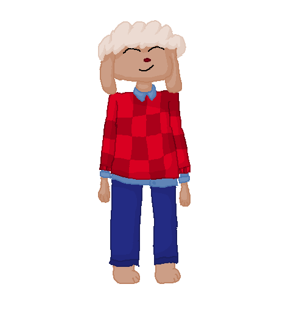

Ostafan

At childhood, Ostafan got leader traits. He tried to play in team games like football(soccer) or volleyball, but activity wasn't for him. Ostafan was intrested in card games like mafia, and in common thread. He was so confidence, what Ostafan can make friends easily. Ostafan's mother, Ruby - "He had a lot of friends. Every week, my son met a new friend and tried to met him with me" His friend, August - "Ostafan looks like sun. Yes not literaly, but you can imagine, how muck rays can he emit".
In school, he studied well. At least, Ostafan can ask someone to help. He also saw his little brother, called Ashton Ashton - "He was clever. I remember, what Ostafan sat for studying whole darktime".
One time, Ostafan met Jania. They had dialogue. Ostafan(speaks happy) - "Hi! What's your name?"
Jania(calm) - "Hello. Jania. What about you?"
Ostafan - "Ostafan, nice to meet you!"
Jania - "U too!"
Ostafan - "Why are you not so happy?"
- "I'm not so happy as you"
- "Ok, then what's your hobby?"
- "Trades. I can assume, what you don't know what is that"
- "Yeah, that's true, but friendship and teaming up is my potential. And if you want a friend or a leader, you can contact me!"
- "I have a lot of friends. Do you have?"
- "Of course! Are you want some?"
- "I don't think so. Last time, I'm so busy..."
- "What do you think about merging our groups?"
- "Then let it happen"
After that, they temporary merged their groups, but later it divided.
One time, Ostafan tried to open his business. The idea was to manage outcoming currency in radio-ganer. He went to the bank for creddit amount of 24M currency and went to debt. He started to hiring all related employers. He thought, it would be good practise to manage his team to release the project. Later, the team got an issue of not having trusty holder of database to storage this. Ostafan discussing about this a lot. He didn't found holder what satisfied their needs. Ostafan decided to create a safety holder of database, but he has to gone to more deeper dept. His idea was expanded to creating a virtual bank in radio-ganer. Employers asked Ostafan for more employers.
Ostafan - "As you can see, you're living for a positive profit except me. I have to return 34M currency to the bank with 4% for each year. you can imagine, how can I fail and lost a lot of them, but still I'm inspiring your progress"
After that, they had finished development, and he releasing the project what was called "TetraBank". After release, Ostafan walked to the govermental city and started to attract potential clients and investors. After for a while, approximately 30 cycles, he got out of debt and started to get positive profit.
When 5th Mind war was occured, Ostafan wasn't gived up his business. He started to growing up, but some citizens complained about that stategy. They explaining, what during the war, nobody aren't going to manage their silvers radin-ganer convertion and/or transfering it. Ostafan decided to get a traffic by donations to the army. When his team did this, income of his company has increased.
Ostafan mentioned, what Fur wouldn't stand, and so, he started to reattach donation to the other side of the war. "Among banks and us, war!" - It's an article, what was published as a exclusive content in newspapers. Someone, who was dissapointed, was tried to arrest him, but it was too late. It this moment, Fur decleared as surrendered. Occupied country, such as and cnt started to provide humanitar help for citizens and Ostafan too. They saw his supportive motives, so they promised to expand his services around the Mind. He can live in hope...
After a 5th, 6th and 7th Mind wars, he fleed to Culture to hold here his company in the future, in Fronstan, because of it's cheapness. For a while, he was busy making new hq in Fronstan, he remembered his conversation with Jania about merging groups His decision to divide these groups again was a mistake, as he thought. Then, he realized, it's already in past anyway...
While Ostafan was transferring TetraBank's offices, he mentioned about one movement, which quickly spreaded around the continent. Ostafan liked the idea of unioning all countries of interest and even embracing it [countries, which haven't representation as important as heading countries, like Art hasn't as much importance as Edu]. Recently, Ostafan decided to take a break in Kanzern, he's tired after 5 1250 km-flights. For a while, he sat on a bench, he was unexpectectly Jania, which decided to go further and explore some cities, because of her possibilities. Moreover, Grephanie, where she was, wasn't under control of Life. She decided to explore more. In that time, she was in Kanzern. When he spotted Jania, he started a dialogue:
Ostafan - "Hey!!"
Jania - "Hi, is it like Ostafan?"
Ostafan - "Yeah, so what are you doing here?"
Jania - "Exploring..."
- "Are you really ok?"
- "YEAH!"
- "Then... Wanting to work with me, you're still looking for a job?"
- "Ohh, let's see..."
After that dialogue, they flew to Fronstan. Out of boredom, Ostafan tried to interview her, but she wasn't feeling right. Ostafan, when had flown to Frostan, he decided to assign Jania as recruiter.